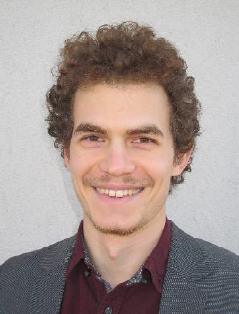

|  |
Gellert SzekelySoftware specialist at Hungarian Suzuki Now I develop database querys use Progress but I want to be a professional full stack Web Developer. |
| Language | Level | ||
|
Progress html css javasript c++ |
X X X X X X X X X X X X X X x X x x x x X X x x x |
Python SQL PHP Java |
X x x x x X X X x x X X x x x X x x x x |